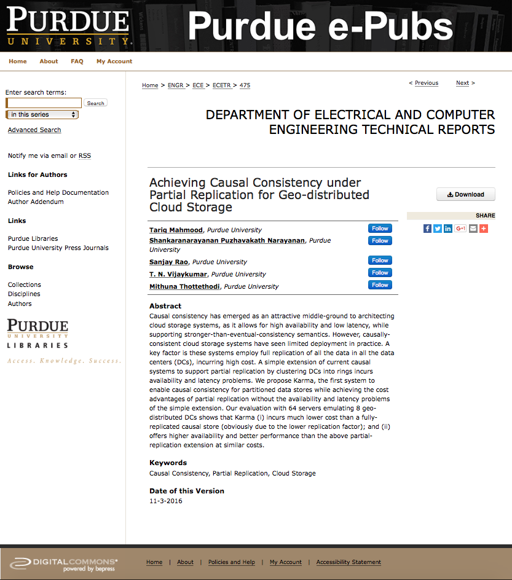
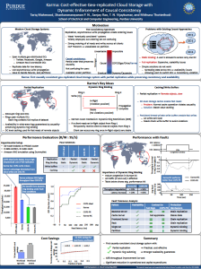

About Me
I recently had my Ph.D. final defense. I'm
currently in the job market as I will be graduating in August 2017. You can
find my resume here, and my
CV (with references) here.
I am a Ph.D. student in the Department of Electrical and Computer Engineering at Purdue University.
I work in the Systems and Architecture Group under the supervision of Prof. Mithuna S. Thottethodi. I also work closely with Professors T. N. Vijaykumar and Sanjay Rao.
My current interests include Distributed Systems, Cloud Computing, and Cloud Storage. I am working on some interesting cloud management problems that arise in a virtualized cloud environment. In addition, I am also interested in developing geo-replicated cloud storage systems that offer stronger-than-eventual consistency guarantees.
Prior to starting graduate school at Purdue, I did my undergraduate in Computer Science from LUMS in Lahore, Pakistan.
I grew up in the city of Lahore, also known as the cultural (and food) hub of Pakistan.
I am a Ph.D. student in the Department of Electrical and Computer Engineering at Purdue University.
I work in the Systems and Architecture Group under the supervision of Prof. Mithuna S. Thottethodi. I also work closely with Professors T. N. Vijaykumar and Sanjay Rao.
My current interests include Distributed Systems, Cloud Computing, and Cloud Storage. I am working on some interesting cloud management problems that arise in a virtualized cloud environment. In addition, I am also interested in developing geo-replicated cloud storage systems that offer stronger-than-eventual consistency guarantees.
Prior to starting graduate school at Purdue, I did my undergraduate in Computer Science from LUMS in Lahore, Pakistan.
I grew up in the city of Lahore, also known as the cultural (and food) hub of Pakistan.
Research
Broadly, my research interests are in the areas of Distributed Systems, Cloud Computing, and Cloud Storage.
- Automated change coordination across independently
managed services in Virtualized Cloud Environments:
Collaborators/Co-authors: Bharath Balasubramanian (AT&T), Kaustubh Joshi (AT&T), Abhinav Srivastava (AT&T), Sanjay Rao (Purdue), and Mithuna Thottethodi (Purdue). This work is part of an on-going collaboration between AT&T Labs Research and Purdue University.
Making a change to a cloud service may often impact, or require coordination with other cloud services, potentially administered by a different entity. Coordinating such changes across cloud services is manual, error-prone and time consuming today because: (1) the full impact of these changes on other services is hard to track and (2) the asynchronous nature of cross-service communication leads to critical bugs during these changes. In this work, we tackle these challenges through ACCORD, a novel middleware for Automated Change COoRDination across independently managed cloud services.
Key idea: A novel coordination protocol for orchestrating changes across services in a Virtualized Cloud Environment
Tools: Openstack, Cassandra, Zookeeper, Java
Testbed: AT&T research cloud based on Openstack
Publication: This work is currently under review at Middleware 2017.
Collaborators/Co-authors: Bharath Balasubramanian (AT&T), Kaustubh Joshi (AT&T), Abhinav Srivastava (AT&T), Sanjay Rao (Purdue), and Mithuna Thottethodi (Purdue). This work is part of an on-going collaboration between AT&T Labs Research and Purdue University.
Making a change to a cloud service may often impact, or require coordination with other cloud services, potentially administered by a different entity. Coordinating such changes across cloud services is manual, error-prone and time consuming today because: (1) the full impact of these changes on other services is hard to track and (2) the asynchronous nature of cross-service communication leads to critical bugs during these changes. In this work, we tackle these challenges through ACCORD, a novel middleware for Automated Change COoRDination across independently managed cloud services.
Key idea: A novel coordination protocol for orchestrating changes across services in a Virtualized Cloud Environment
Tools: Openstack, Cassandra, Zookeeper, Java
Testbed: AT&T research cloud based on Openstack
Publication: This work is currently under review at Middleware 2017.
- Consistency in geo-replicated cloud storage systems:
Collaborators/Co-authors: Shankaranarayanan P. N., Sanjay Rao, T. N. Vijaykumar, and Mithuna Thottethodi
Causal consistency has emerged as an attractive middle-ground to architecting cloud storage systems, as it allows for high availability and low latency, while supporting stronger-than-eventual-consistency semantics. However, causally-consistent cloud storage systems have seen limited deployment in practice. A key factor is that these systems employ full replication of all the data in all the data centers (DCs), incurring high cost. A simple extension of current causal systems to support partial replication by clustering DCs into rings incurs availability and latency problems. We propose Karma, the first system to enable causal consistency for partitioned data stores while achieving the cost advantages of partial replication without the availability and latency problems of the simple extension.
Key ideas: Partial replication, consistency preserving dynamic ring binding
Tools: Cassandra, YCSB, Java
Testbed: PRObE
Publication: This work is currently under review at the IEEE Transactions on Cloud Computing. It was also presented during the poster session at the ACM Symposium on Cloud Computing 2016 (SoCC 2016)
| Tech Report  | Poster  |
Work Experience
- Summer intern, with the Cloud Software Research Group at
AT&T Labs
Research, Bedminster NJ (June - August 2016)
Designed and developed a new platform that enables automated change coordination across independently managed services in Virtualized Cloud Environments. The system was fully integrated with the Openstack-based AT&T research cloud. This work spawned a new research direction for my lab, and a collaboration (still on-going) between Purdue University and AT&T Labs Research.
- Software Development Engineer Intern, with the Community Platform Team at Amazon, Seattle WA (June - August 2010)
Worked on the design and development of a reputation system for Amazon.com. Also worked on the integration of Audible.com into the Amazon services system.
Designed and developed a new platform that enables automated change coordination across independently managed services in Virtualized Cloud Environments. The system was fully integrated with the Openstack-based AT&T research cloud. This work spawned a new research direction for my lab, and a collaboration (still on-going) between Purdue University and AT&T Labs Research.
- Software Development Engineer Intern, with the Community Platform Team at Amazon, Seattle WA (June - August 2010)
Worked on the design and development of a reputation system for Amazon.com. Also worked on the integration of Audible.com into the Amazon services system.
-
Research Associate, Department of Computer Science, School of
Science and Engineering LUMS, Lahore Pakistan (September 2005 - May 2007)
Worked on the development of a fault tolerant router using open source software. This work was based on my senior year project that aimed at developing a fault tolerant TCP server for generic single threaded applications. Findings were published in the form of an experience report at the South Asian Network Operators Group (SANOG) VIII, Karachi Pakistan in August 2006.
Worked on the development of a fault tolerant router using open source software. This work was based on my senior year project that aimed at developing a fault tolerant TCP server for generic single threaded applications. Findings were published in the form of an experience report at the South Asian Network Operators Group (SANOG) VIII, Karachi Pakistan in August 2006.
Teaching
Course: Calculus-I (two sections)
Level: Freshman
I was responsible for conducting recitations (twice a week for each section), making and grading quizzes, helping students with their home works, and proctoring exams.
- Teaching Assistant, Department of Computer Science, LUMS, Spring 2011
Course: Graduate Algorithms
Level: Graduate
I was responsible for delivering lectures, organizing help sessions, and helping with course grading.
- Undergraduate Teaching Assistant, Department of Computer Science, LUMS, May 2004 - January 2006
Courses: Operating Systems, Databases, Data Structures and Algorithms, and Introduction to Computing.
Side Interests
Graduate Assistant, Purdue Libraries Archives and Special Collections (ASC) Research Center, January 2013 - May 2016
The Purdue ASC is home to some unique and valuable collections, including the Neil Armstrong Collection, Amelia Earhart Collection, and Psychoactive Substances Research Collection. I worked there as a student archivist under the supervision of Carly Dearborn. My primary role was to process the Donald Heirman Collection. This included accessioning and processing new materials, developing and maintainig a Finding Aid, and making the collection available online. I also assisted with developing new processes (automated scripts, and in-house tools) for handling digital collections, including the use of digital forensics tools (FTKImager, Kryoflux, Freddie Toolkit) to get data off of legacy media.
Prior to this, I worked at my college and high school libraries as a student worker.
Some Cool Academic Projects
- Implementation and evaluation of Dynamic
Self Invalidation as a technique that reduces cache coherence overhead
in a shared memory multiprocessor. Undertaken during a course on
Advanced Computer Architecture under the supervision of Prof.
Vijaykumar. Tools: Simics, Gems, C
- A comparative study of 3G and WiFi networks for mobile devices: Undertaken during a course on Distributed Systems. The study aimed at benchmarking the available 3G and WiFi networks in the city of West Lafayette (home of Purdue). The study focused on clients using smart phones and required extensive development on Android-based phones. Tools: Java, Android
- Intensive operating system development: Done as part of a graduate course on Operating Systems. Projects consisted of implementing various scheduling policies, mechanisms for inter-process communication and a fully functional virtual memory sub-system. The development was done in an instructional Operating System called XINU. Tools: C/C++
- Compiler development: Built a fully functional language compiler as part of a graduate course on Compilers and Translation Systems. Tools: C/C++
- A comparative study of 3G and WiFi networks for mobile devices: Undertaken during a course on Distributed Systems. The study aimed at benchmarking the available 3G and WiFi networks in the city of West Lafayette (home of Purdue). The study focused on clients using smart phones and required extensive development on Android-based phones. Tools: Java, Android
- Intensive operating system development: Done as part of a graduate course on Operating Systems. Projects consisted of implementing various scheduling policies, mechanisms for inter-process communication and a fully functional virtual memory sub-system. The development was done in an instructional Operating System called XINU. Tools: C/C++
- Compiler development: Built a fully functional language compiler as part of a graduate course on Compilers and Translation Systems. Tools: C/C++
Previous Affiliations
B.Sc. (Hons.), School of Science and Engineering LUMS, Lahore Pakistan
Major in Computer Science, minor in Mathematics
Academic Advisor: Prof. Shahab Baqai
See my old webpage here
A-Level, Aitchison College, Lahore Pakistan
Pre-Engineering
Major in Computer Science, minor in Mathematics
Academic Advisor: Prof. Shahab Baqai
See my old webpage here
A-Level, Aitchison College, Lahore Pakistan
Pre-Engineering
Fun Stuff
- Photography: www.flickr.com/tarekm
- Performance cars (Internal Combustion engine in general)
- High Altitude Balloons:
I've recently developed an interest in High Altitude Ballooning.
I am a member of Purdue SEDS (Students for the Exploration and Development of Space) club.
My last balloon reached an altitude of 122,961 feet (or 23.29 miles)!
- Trekking, traveling
- Performance cars (Internal Combustion engine in general)
- High Altitude Balloons:
I've recently developed an interest in High Altitude Ballooning.
I am a member of Purdue SEDS (Students for the Exploration and Development of Space) club.
My last balloon reached an altitude of 122,961 feet (or 23.29 miles)!
- Trekking, traveling
Tariq Mahmood
Last updated: Monday, 07/11/2017 20:04 ET
Last updated: Monday, 07/11/2017 20:04 ET